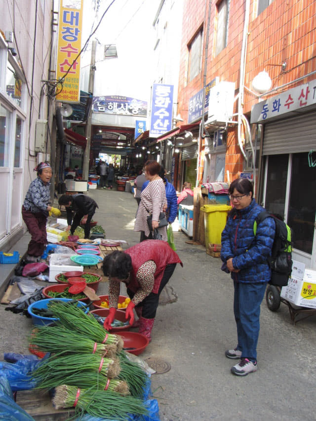

4.12.2017 (星期三)
時間匆匆, 不經不覺地已經在南海郡的 Manhattan Motel 住了三晚, 今早便離開南海, 乘巴士往這韓國旅程最後一個停留城市 — 釜山。隨著南海行程的結束, 所有精彩行程也宣佈完結, 這韓國春天濟州島及南部之旅也來到尾聲了! 我們將會在釜山住宿一晚, 明天下午乘飛機離開韓國, 返回香港, 又結束了這個愉快難忘的春天假期。。
南海往釜山沙上客運站的巴士班次十分多, 旅程來到這階段, 不想太匆忙, 便選擇了早上 9:05 的班次。
南海 巴士 往 釜山沙上客運站 (兩小時)
7:50 / 8:25 / **9:05 / 9:50 / 10:30 / 11:10 / 12:00 /
12:50 / 14:05 / 14:35 / 15:25 / 16:15 / 17:05 / 17:30 /
18:20 / 19:20
早上七時半起床, 梳洗完畢, 在房間吃了昨天餘下來的一半蛋糕, 收拾行李, 負上背囊, 於早上八時三十分離開住了三晚的優質酒店 Manhattan Motel 。
接著沿小街慢慢走。每天來回都經過這街道, 感覺已經十分熟絡了。
幸好沒有在第78小街這間質素肯定差很多的「장수장모텔」汽車酒店住宿, 否則南海的回憶便沒有那麼美好。
原來南海傳統市場 (남해전통시장 Namhae Traditional Market)和附近街道早上是那麼熱鬧的, 總算在離開前看到。

慢慢向前走, 算一算, 這黃澄澄的油菜花田剛好經過十次, 差不多每次都有停下來拍照, 今次應該是最後一次吧!
非常好味的豬軟骨湯飯餐館 — 可惜位置的缺憾, 生意反而不及質素差的好
再往前走一會, 馬路對面右邊細間的是非常好味的豬軟骨湯飯餐館 — 「배가네돼지국밥」餐館, 左邊大間的便是我們昨晚去錯的餐館, 食物質素差很多。再看清楚, 豬軟骨湯飯餐館是凹入去的, 如果沿對面馬路從我們現在這方向走, 要走過質素差那間餐館才看到豬軟骨湯飯餐館 ! 這正是我所說豬軟骨湯飯餐館位置的缺憾, 令我們昨晚去錯隔鄰素質差很多那間餐館!
南海乘高速巴士往釜山西部巴士客運站 (부산서부버스터미널 Busan Seobu Bus Terminal)
再向前走一會, 約早上八時四十五分來到南海公用客運站 (남해시외버스터미널), 進入一樓大堂, 在售票窗口買了兩張早上 9:05 往釜山西部巴士客運站 (或稱 釜山沙上客運站)的巴士車票, 每位是 11,900 韓元, 非常昂貴! 不過巴士十分舒適, 物有所值的。
離開車只有十多分鐘, 看見往釜山的高速巴士已經停靠在1號月台, 便便坐在月台旁的椅子等候。南海巴士車長給我們的印象很好、很熱心, 也不知如何感謝他們。
早上八時五十五分, 可以上車了。車頭的路線牌有「BUSAN」這英文字, 這次不用估估下啦!
同樣只有幾位乘客, 十分舒適。
高速巴士準時於早上九時五分從南海公用客運站開出。
離別在即, 總讓人依依不捨。令人懷念的南海郡! 優美寧靜的村落, 民情淳樸, 熱情的車長, 怎教人不懷念, 怎教人不去回想這幾天所經歷的點點滴滴。遊覽南海郡, 搭乘公共交通總給人說不方便和浪費時間, 但如果不是這樣, 就不會留下那麼多的難忘回憶!
令人懷念的南海郡~~~~~~ 拜拜啦!
望著車外移動的風景, 不經不覺間, 南海大橋就在窗外閃出。回想三天前沿南海大橋步行往返南海郡、河東郡兩岸, 記憶仍然那麼清晰, 好像剛剛發生的。當巴士駛上南海大橋, 便正式離開南海郡! 而南海郡所有行程也正式在此宣佈完滿結束!
「令人懷念的南海郡~~~~~~ 拜拜啦!」真想大喊出來!
巴士駛過南海大橋後, 便進入河東郡, 接著在前面的路口轉右, 沿露梁海峽一直行駛。回頭望望, 仍然可勉強的看到南海大橋。
接著巴士高速駛往釜山, 沿途停靠了一個大站。
釜山西部巴士客運站 (부산서부버스터미널 Busan Seobu Bus Terminal)
高速巴士於早上十一時抵達終點站釜山 — 釜山西部巴士客運站 (或稱 釜山沙上客運站), 一個我們非常熟悉的城市, 也是這韓國旅程最後一個停留城市。